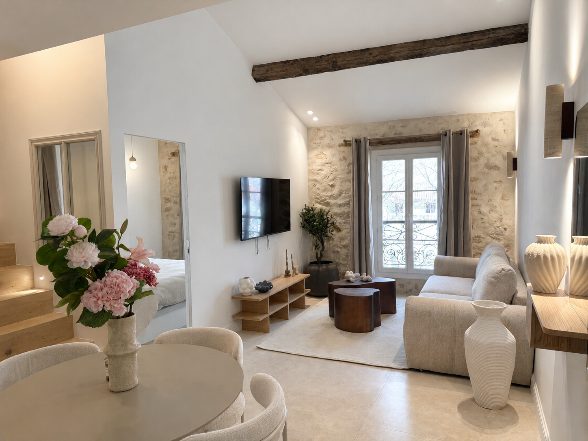
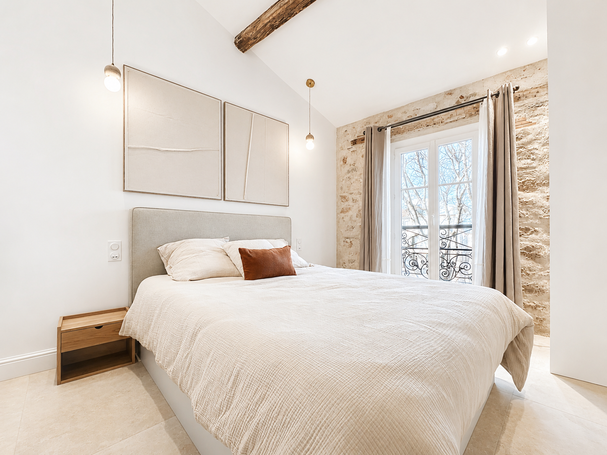
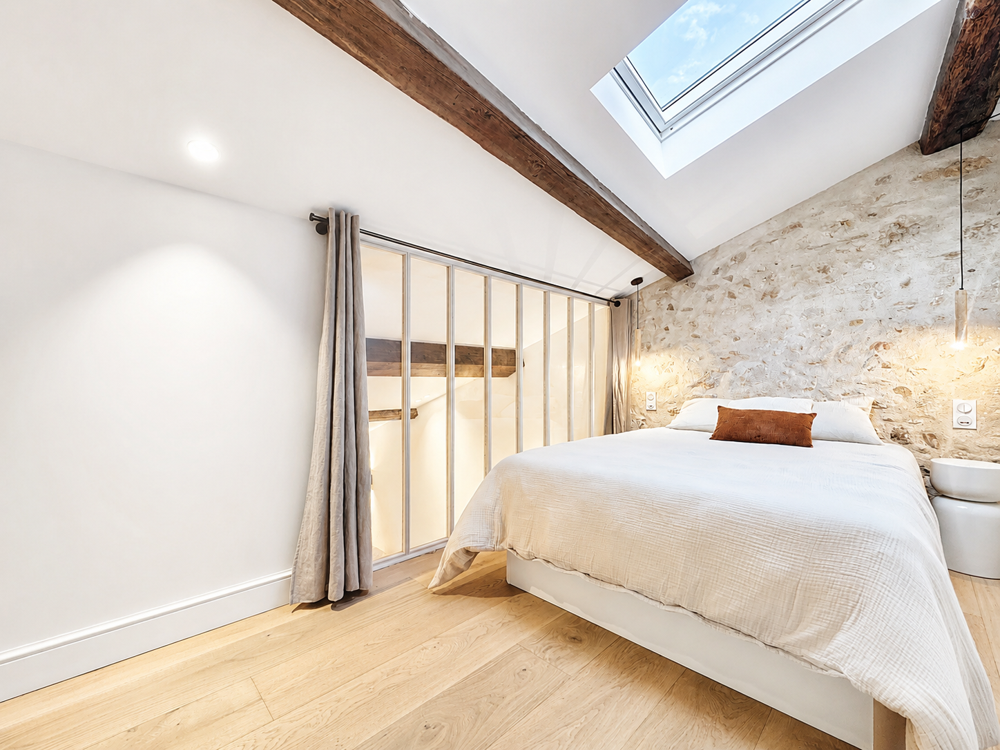

Vue Place Nationale
25 rue Sade

T3 · Vue Place Nationale · Meublé
Appartement Vue Place Nationale
- 51 m²
- Vieil Antibes · Place Nationale
539 000 € FAI
Sous compromis
Demander une informationAu cœur de la Place Nationale, ce T3 de 51 m² s'inscrit dans la réhabilitation soignée d'un immeuble de caractère du Vieil Antibes. Combles aménagés, vue directe sur la place, livré entièrement rénové, meublé et clé en main.
- Surface : 51 m²
- Typologie : T3 meublé
- Étage : dernier — combles aménagés
- Exposition / vue : Place Nationale
- État : entièrement rénové, prêt à habiter
- Prix : 539 000 € FAI
- Honoraires : à charge vendeur — proposé par l'Agence des Remparts

